高级数据结构与算法分析
1. AVL Trees, Splay Trees, and Amortized Analysis
AVL 树
就是不停的转，要额外存一个树高或者平衡因子，所以空间开销总是比 Splay Tree 大。
- 平衡因子 = 左 - 右
插入
- Trouble maker 总是找最近的 Trouble finder 解决
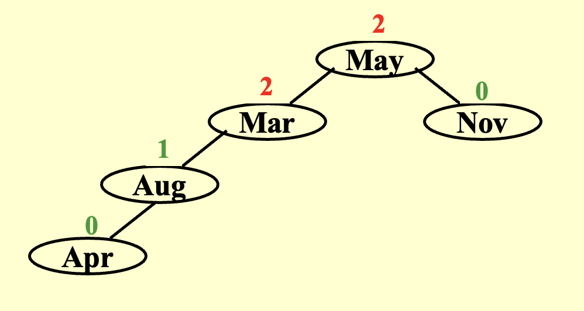
注意到这种方法使(原) Mar 子树的高跟插入前保持一致
- 扭着不平衡的话，要下探两个孩子节点
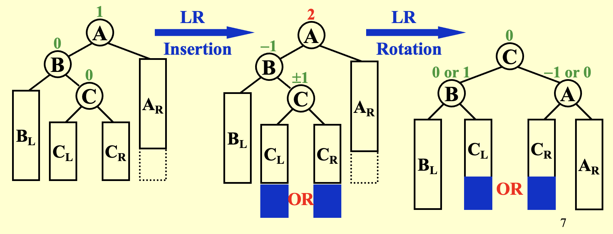
注意到这样使 B 子树的高跟插入前保持一致
插入时查找消耗 \(O(\log N)\) 时间，旋转消耗 \(O(1)\)
删除
AVL 删除最坏旋转次数是 \(O(\log N)\) 的，因为某些情况下，不能保证解决问题的子树树高不变，导致可能递归到根
最小节点数
与斐波那契数列有紧密关系 定义空树树高为 -1
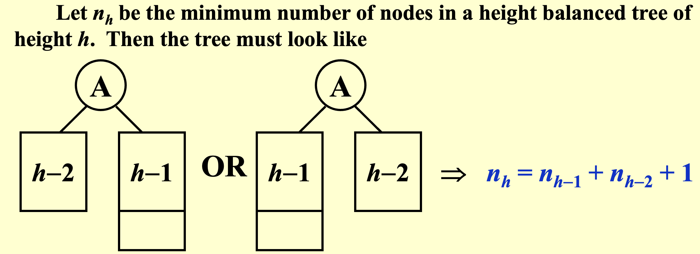
结论： \(n_h = F_{h+2} - 1\)
Splay Trees
每次查询一个节点的时候，就把他转到根上
- Case1: 父节点是根 直接转
- Case2: 两种 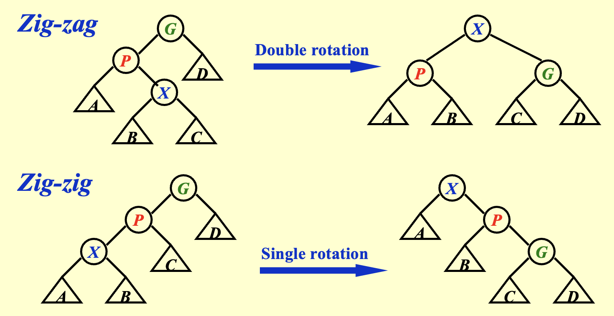
均摊 \(O(\log N)\) 原因
Splaying not only moves the accessed node to the root, but also roughly halves the depth of most nodes on the path.
均摊开销
定义势能函数为 均摊开销 - 实际开销
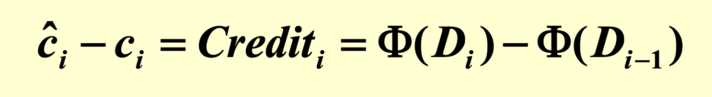
在设计时，\(\hat{c}_i\) 应当易于计算 n 次连续操作复杂度，从而控制 \(\Sigma c_i\) 的上界
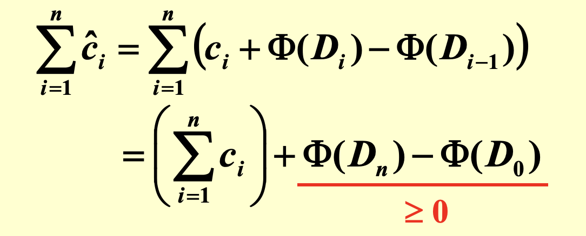
上图中的势能差不一定要大于 0，只要挪到左边后，仍然可被 \(\Sigma_{i=1}^n \hat{c_i}\) 控制即可
2. Red-Black Trees and B+ Trees
红黑树
性质
- 性质1: 每个节点是红色或黑色
- 性质2: 根节点是黑色
- 性质3: 所有叶子节点（NIL）是黑色
- 性质4: 每个红色节点的两个子节点都是黑色（不能有连续的红色节点）
- 性质5: 从任一节点到其下每个叶子的所有简单路径都包含相同数目的黑色节点（黑高）
树高
有 \(N\) 个内部节点的红黑树，树高最多是 \(2\ln(N +1)\)
思路：1. 证明黑高上界 2. 证明树高 \(\le bh*2\)
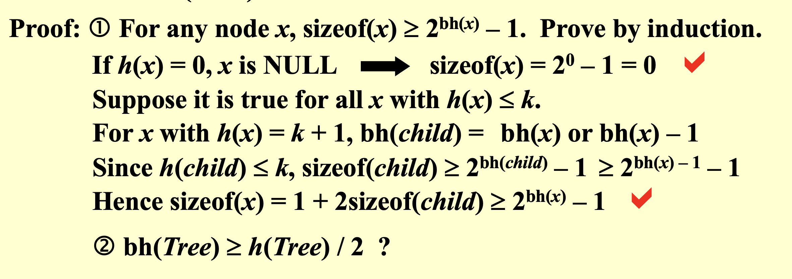
插入
为减少冲突，都插入红色节点
看图↓↓
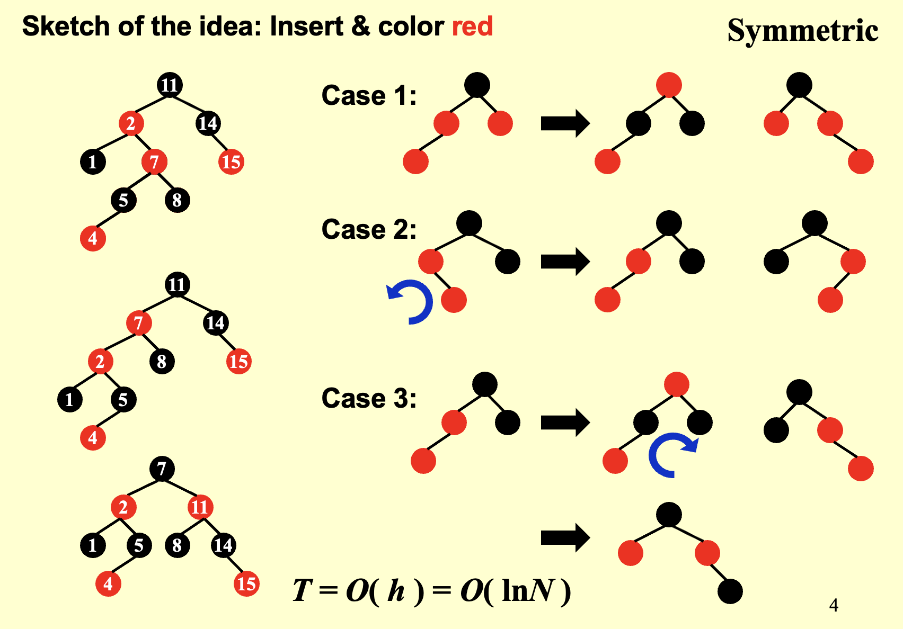
- 图中的问题红节点不一定就是叶子，因为 case1 在染色后根变成红色，不一定能满足性质，要继续向上调整。也是因为这个，染色操作可能递归到根。但旋转操作最多只有两次，是 \(O(1)\) 的。
- case1 如果碰到要将根节点染红，其实没关系，再染成黑的就行了，相当于把所有节点的黑高 + 1
删除
红黑树相较于 AVL 树，好就好在删除的旋转也是 \(O(1)\) 的，但也太 jb 复杂了
- 整个删除操作包含两部分，一个是普通二叉树的节点删除，还有一个是红黑树结构的调整。第一部分和普通二叉树一样，最终真正删除的节点不一定是逻辑上删除的那个节点。
- 因此最终真正删除的节点最多只有一个孩子。
- 如果要删除的节点是红色，那么直接删除不影响性质。
- 如果是黑色，就需要调整。这样就导致黑节点少了一个，所以要把黑高补回来
看图↓↓
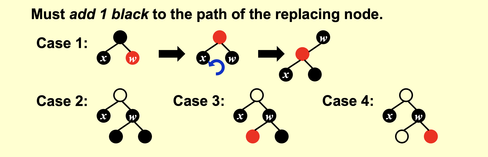
之前看 case1 一直看不懂，本来以为他把矛盾向上转移了，但其实没有，只是给 x 换了一个兄弟，并且根的颜色变成红色，就变成了其余三个 case
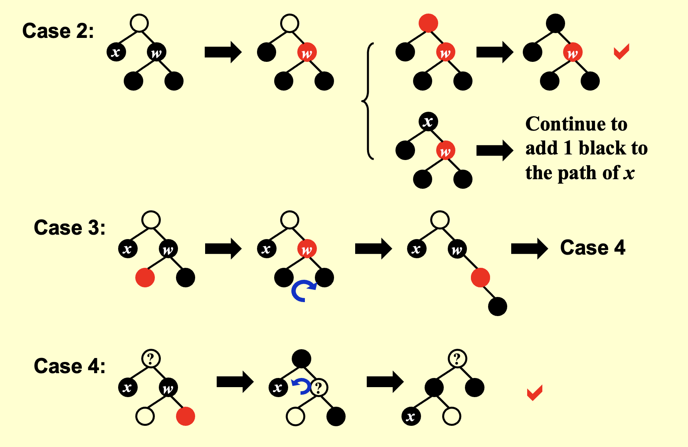
剩下三种情况，都是兄弟节点是黑色的情况
特殊情况
- case 2.2 仍然没有解决，因此会向上递归（这个是真的向上了）。所以图里的 x 不一定就是被删除的节点，而其实是被删除节点的替身，象征着从 x 开始，往下所有节点的黑高都缺 1.
- 你可能会担心 case 2.2 如果 x 是根怎么办，但其实并不影响，这相当于把整棵树的黑高都减了 1.
最终整个过程在 case4 一定被解决，所以旋转次数是 \(O(1)\) 的
比较
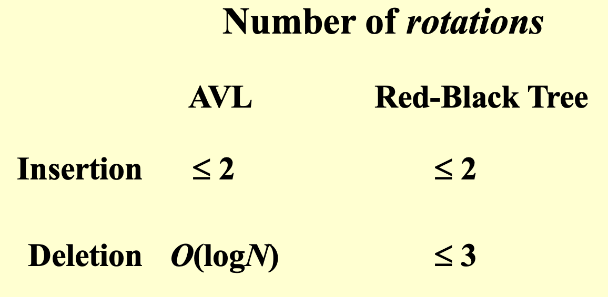
B+ 树
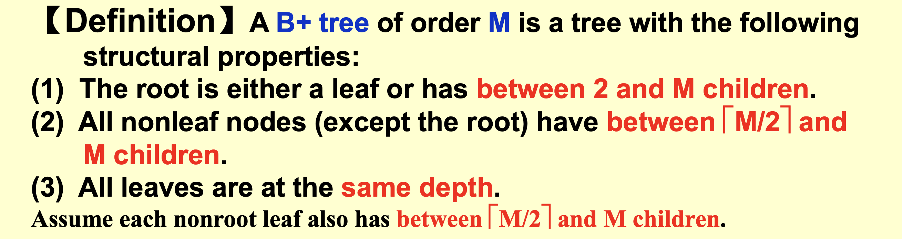
- 对于根节点，允许最少两个孩子
- 对于非叶子节点，孩子数是分叉数，即子树的数量
- 对于叶子节点，孩子数是关键字数，也就是索引的数量
插入
- 插入新节点可能导致节点的孩子数爆掉，采取分裂节点解决，这种方法也会向上递归
- 分裂可能导致上层节点的关键字改变，关键字代表右侧指针指向子树中的最小索引值，所以分裂后可能需要更新
- 根分裂后，新建一个根，树高 + 1
- 还有一种解决方法是找孩子数少的兄弟节点分担
删除
删除基本就是插入的逆过程，节点数不足时从旁边匀一点，或者合并，同样向上递归；如果根只有一个孩子了，就删掉根，树高 - 1
复杂度
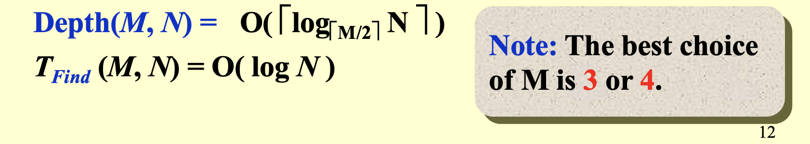
需要注意的是，B+ 树是应用于数据库系统中的一种数据结构，所以他的数据其实并不存在内存，而是在磁盘上，所以磁盘 I/O 是一个重要的考量因素。 理论上 M 的最佳取值是 3 或 4，但是这样会导致树高增大，磁盘 I/O 次数增多，所以实际的 M 会比这大得多，从而降低树高
比较
B+ 树是 B- 树的改进。在 B- 树中，非叶子结点也会存储数据。而每一个页的存储空间是有限的，如果 data 数据较大时将会导致每个节点（即一个页）能存储的 key 的数量很小，当存储的数据量很大时同样会导致 B- Tree 的深度较大，增大查询时的磁盘 I/O 次数，进而影响查询效率。在 B+ Tree 中，所有数据记录节点都是按照键值大小顺序存放在同一层的叶子节点上，而非叶子节点上只存储 key 值信息，这样可以大大加大每个节点存储的 key 值数量，降低 B+ Tree 的高度。[1]
B+ Tree 的改进：
- 非叶子节点只存储键值信息。
- 所有叶子节点之间都有一个链指针*。
- 数据记录都存放在叶子节点中。
所以上课说的 “连续访问” 依赖的并不是数据在内存中的连续存储，而是叶子节点的链指针，从而在磁盘上实现顺序访问 内存起到的作用是在读入一个节点时关键字是一个有序表结构，可以利用二分法查找提高效率。
3. Inverted File Index
倒排索引，搜索引擎
正排索引
做一个 单词 - 文档 相关矩阵
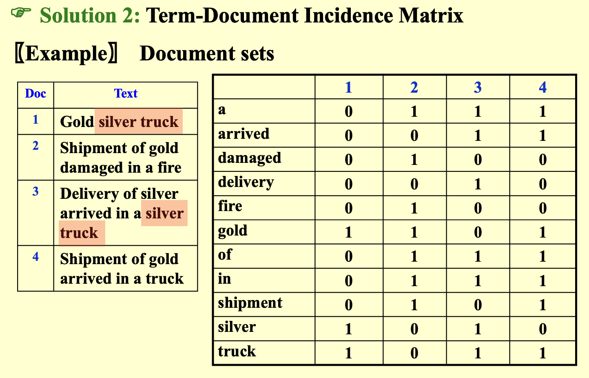
缺点：空间太大
倒排索引
基础版
包含单词出现的次数，和相应的文档索引
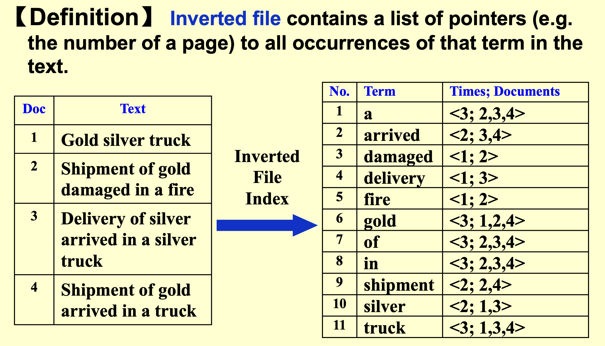
叫他 “inverted” 因为他是从单词到文档映射
增强版
还包含了单词在文档中出现的位置，方便高亮显示查询的单词
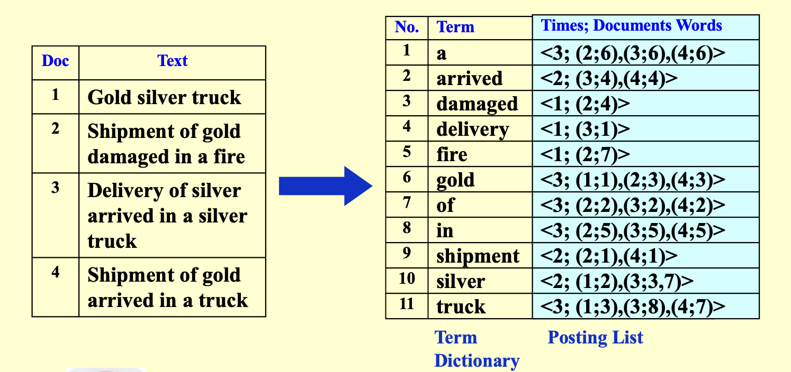
词干提取和停止词
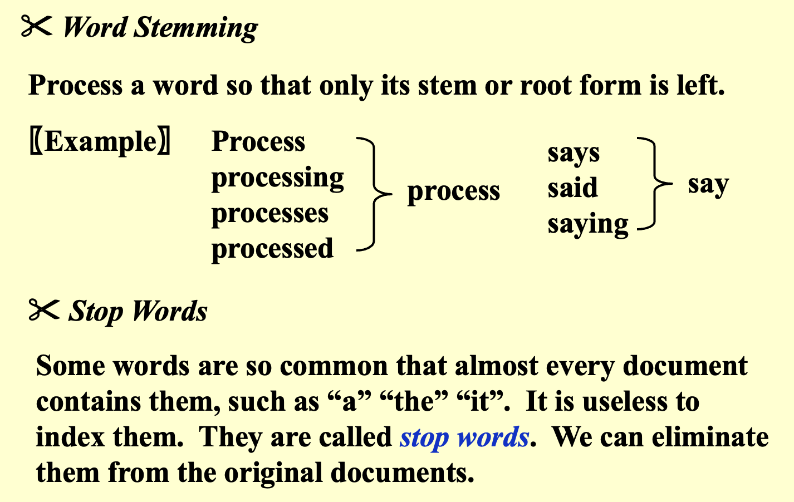
分布式索引
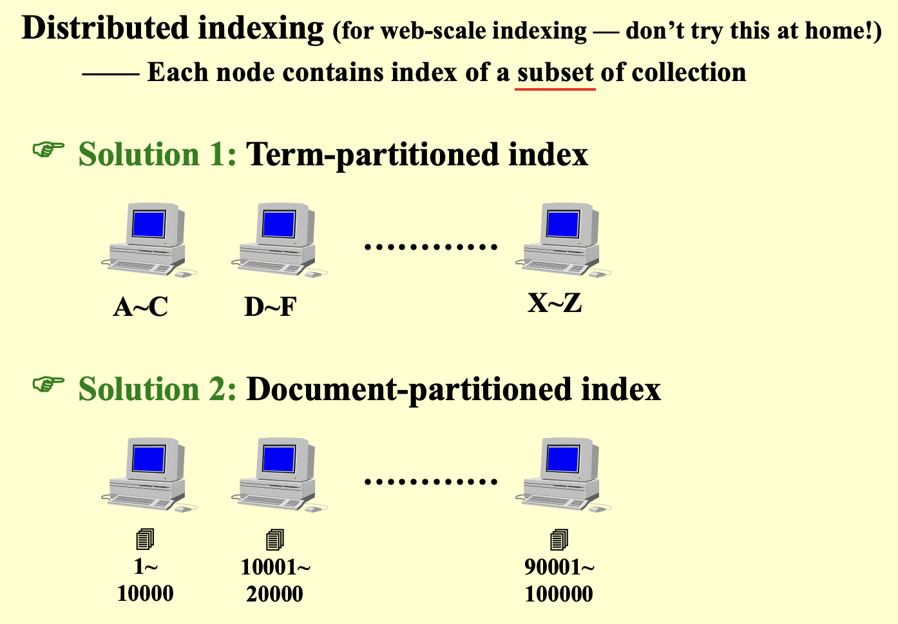
有两种方法，注意看清题目问的是哪一种
Thresholding
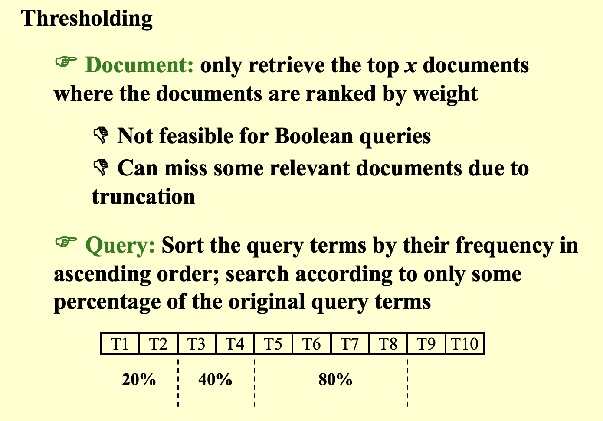
同样要注意题目问的是哪个
- Document：只返回排名前 k 的文档
- Query：只查询稀有度排名靠前的单词
搜索引擎性能
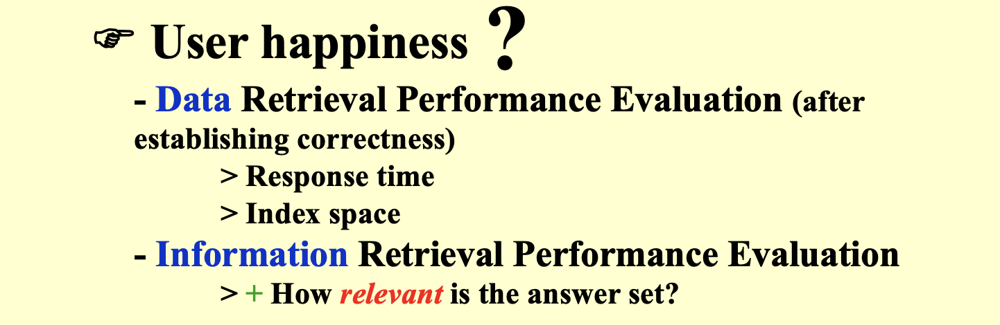
一样要注意题目中指标和描述是否对应
相关性评估
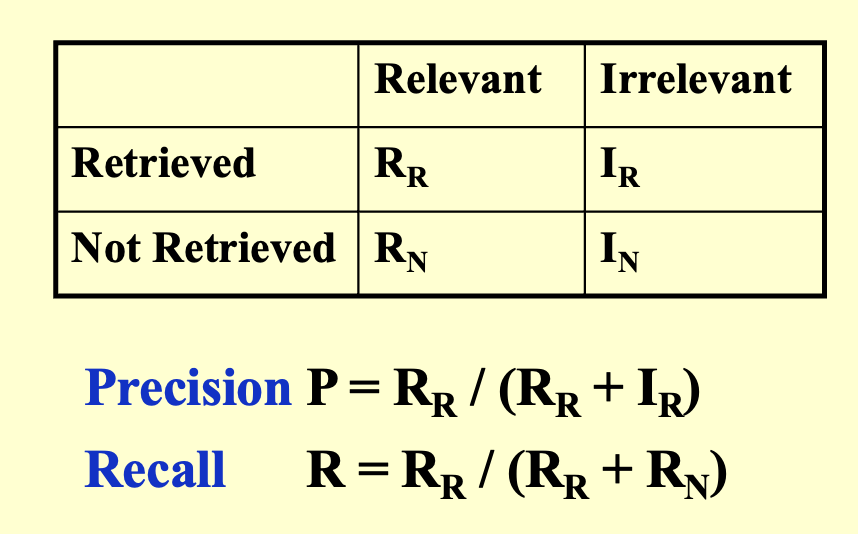
Precision: 准确率，在查到的文档集上，评估相关（有用）文档的比例
Recall: 召回率，在所有相关文档上，评估查到文档的比例
4. Leftist Heaps and Skew Heaps
左式堆
将堆的合并操作从 \(O(N)\) 优化到 \(O(\log N)\)
Npl
Null Path Length，定义为节点到度为 0 的叶子节点的最短路径长
空树的 Npl 为 -1
Leftist Property
任意节点 左孩子的 Npl \(\ge\) 右孩子的 Npl
从而保证了整个堆看上去像是向左倾斜的，因此又叫左倾堆，这种性质使得整个堆可以按右路径上的节点切成一条一条的，并且数量能够被 \(\log N\) 控制
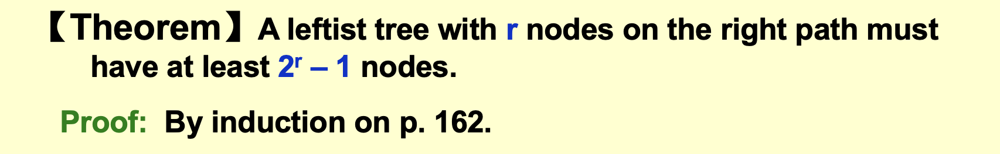
合并
所谓合并，其实就是把所有的长条按右路径上节点的值重新排序，拼接起来，并且保证合并后的堆仍然是左倾的，既可以写递归也可以写迭代
- 迭代： 从下往上依次拼接，碰到 \(左 < 右\) 时就交换左右子树
- 递归： 分三步进行(默认 H1 的根节点值更小) 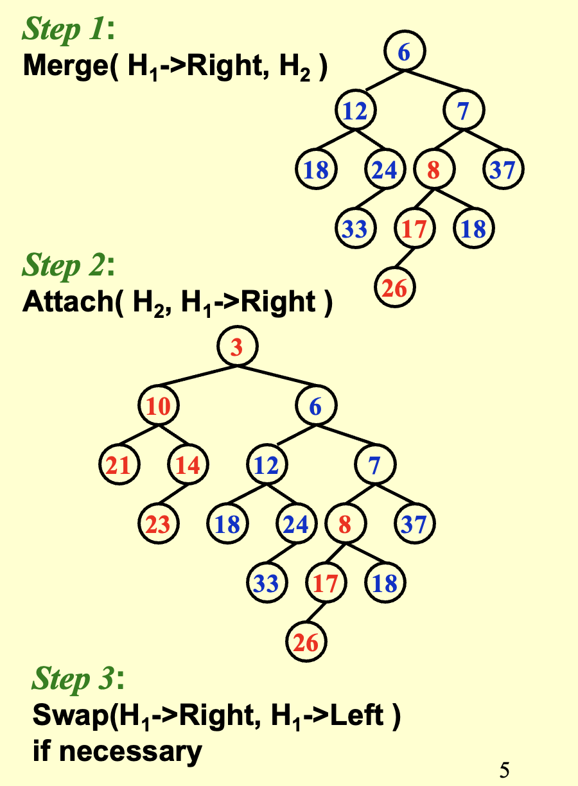 {width=80%}
代码
PriorityQueue Merge(PriorityQueue H1, PriorityQueue H2) {
if (H1 == NULL) return H2;
if (H2 == NULL) return H1;
if (H1->Element < H2->Element)
return Merge1(H1, H2);
else
return Merge1(H2, H1);
}
static PriorityQueue Merge1(PriorityQueue H1, PriorityQueue H2) {
if (H1->Left == NULL) { // single node
H1->Left = H2; // H1->Right is already NULL and H1->Npl is already 0
} else {
H1->Right = Merge(H1->Right, H2); // Step 1 & 2
if (H1->Left->Npl < H1->Right->Npl)
SwapChildren(H1); // Step 3
H1->Npl = H1->Right->Npl + 1;
}
return H1;
}
插入和删除
- 插入可以看作与一个单节点的堆合并
- 删除可以看作将根节点删除，然后左右子树合并
Skew Heap
AVL Tree 和 Splay Tree 相对，Skew Heap 与 Leftist Heap 相对。
Skew Heap 的操作和左式堆基本相同，区别在于他每次拼接都会交换左右子树。虽然最坏情况时间复杂度为 \(O(N)\)，但是均摊开销依然是 \(O(\log N)\) 还有一个好处是这样就不用维持左倾的性质了，所以节省了 Npl 的空间开销
均摊开销的证明
定义重节点为右子树节点总数比左子树多的节点。 定义势能函数为整棵树的重节点数 注意到
- 只有原先在两棵树右路径上的点的轻重会改变
- 原先右路径上的重节点一定变轻
- 依据先前左式堆的推导，右路径上的轻节点数被 \(\log N\) 控制
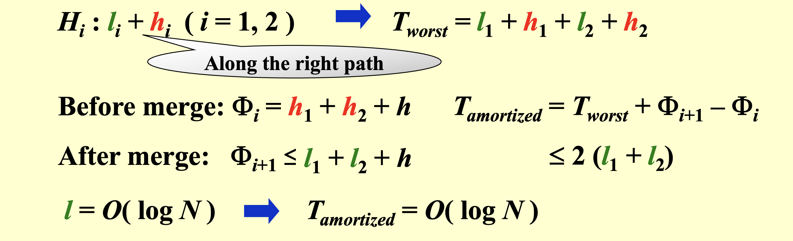
10. NP-Completeness
P 问题是确定型图灵机能在多项式时间内解决的问题，NP 问题是能在多项式时间内验证答案的问题，或者一台 lucky machine 能在多项式时间内找到答案的问题
注意： $$ P\in NP $$ 所以说 NP 没有 polynomial time 是错的
NP Complete
如果所有 NP 问题都可以在多项式时间内归约到某个问题，且这个问题属于 NP，那么他就是就是 NPC 问题，比如： - SAT 问题：布尔表达式是否为真 - Clique 问题：图上是否存在一个大小为 k 的完全子图 - Vertex Cover 问题：图上是否存在一个大小为 k 的顶点覆盖 - Subset Sum 问题：集合中是否存在一个子集，其和为 k - Hamiltonian Cycle 问题：图上是否存在一条哈密顿回路 - TSP 问题：图上是否存在一条哈密顿回路，并且总权值最小
NP Hard
如果被归约到的问题不属于 NP，那么他就是 NP Hard 问题，比如：
可判定
- 所有 NPC 问题都是 NP Hard 问题
不可判定
- 停机问题
语言
把某种二进制串集合叫做一种语言，用某种算法可以判定一个串是否属于该语言，那么这个语言就可以代表一种问题。
co-NP
P 是一类多项式时间可解问题，是 NP 和 co-NP 的子集。人们认为 P 在这两种情况下都是严格子集。因为 P 在互补下是封闭的，而 NP 和 co-NP 是互补的，所以它不可能在一种情况下是严格的，而在另一种情况下不是严格的：如果 P 等于 NP，它也一定等于 co-NP，反之亦然。
NP 和 co-NP 也被认为是不相等的，那么没有一个 NP-complete 可以在 co-NP 中，也没有一个 co-NP-complete 可以在 NP 中。这是因为，如果有一个 \(NPC\in\textit{co-NP}\)，那么既然所有的 NP 都可以归约到它，那么所有的 NP 就都是 co-NP，所以 NP 等于 co-NP。